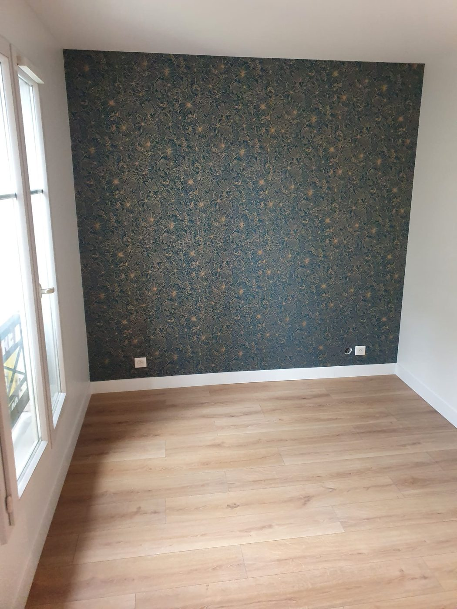

Prestations / Papier peint et revêtements muraux
Papier peint et revêtements muraux
Un panoramique se joue au premier lé. L'axe se décide avant, il ne se rattrape pas.

Ce que nous réalisons
Papiers, panoramiques, toiles
Ce que nous posons
- Papiers peints traditionnels et intissés, unis, à motifs ou à raccord sauté.
- Panoramiques et décors muraux, y compris les modèles à lés numérotés qui ne pardonnent aucune erreur d'axe.
- Toile de verre et revêtements à peindre, sur murs fissurés ou irréguliers.
- Frises, soubassements et pose partielle sur mur d'accent.
- Dépose d'anciens papiers, décollage à la vapeur et remise en état du support.


Notre méthode
Support, axe, raccords
Le support d'abord, l'axe ensuite
Un papier peint ne masque pas un mauvais mur, il le souligne. Sur un intissé mat, la moindre bosse d'enduit se lit en lumière rasante. Nous ratissons et nous appliquons une impression d'accrochage avant toute pose.
Sur un panoramique, l'axe se décide en fonction de ce que l'œil voit en entrant dans la pièce, pas du mur le plus commode à démarrer. Dans un appartement haussmannien où aucun angle n'est à 90°, le calepinage se fait au sol avant de couper le premier lé.
Nous vous disons à la visite combien de rouleaux commander, raccord et chutes compris. C'est l'erreur la plus fréquente et la plus coûteuse, un bain de teinte différent ne se rattrape pas.
Prix indicatifs
Fourchettes 2026, hors fourniture
Combien ça coûte
| Prestation | Prix HT |
|---|---|
| Pose de papier peint uni ou intissé, hors fourniture | 24 à 38 €/m² |
| Pose à raccord ou à motif complexe, hors fourniture | 34 à 52 €/m² |
| Panoramique à lés numérotés, hors fourniture | 45 à 75 €/m² |
| Toile de verre, pose et mise en peinture | 32 à 50 €/m² |
| Préparation du support, ratissage et impression | 14 à 28 €/m² |
| Dépose d'ancien papier peint et remise en état | 12 à 25 €/m² |
Prévoyez 10 à 15 % de chutes sur un papier à raccord. Nous calculons le métrage exact à la visite et nous vous donnons la référence à commander.
Prix indicatifs, hors fourniture lorsque précisé. TVA à 10 % pour les logements achevés depuis plus de deux ans. Chaque chantier fait l'objet d'un devis détaillé après visite technique gratuite.
Questions fréquentes
4 réponses
Questions fréquentes
Dois-je fournir le papier peint ?
Le plus souvent oui, c'est un choix personnel. Nous vous indiquons le métrage et le nombre de rouleaux, et nous vérifions que tous portent le même numéro de bain.
Peut-on poser sur un mur fissuré ?
Avec une toile de verre, oui, c'est même l'usage principal. Avec un intissé fin, la fissure réapparaîtra. Nous traitons le support avant.
Combien de temps pour une pièce ?
Un à deux jours pour une chambre selon la préparation, une demi-journée à une journée pour un seul mur panoramique.
Le papier peint tient-il en salle de bain ?
Sur les murs hors zone de projection et avec une bonne ventilation, oui. Derrière une douche ou une baignoire, non, il faut un revêtement adapté.
Voir aussi : peinture intérieure · peintures décoratives · façades
Passer à l'action
Réponse sous 24 h
Parlons de votre projet
Visite technique gratuite, devis détaillé sous 48 heures, dans l'est parisien et à Paris.